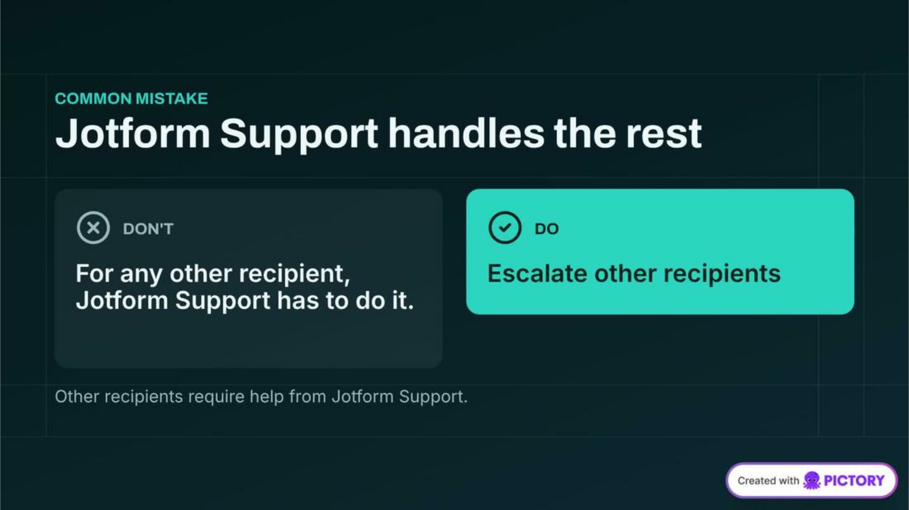
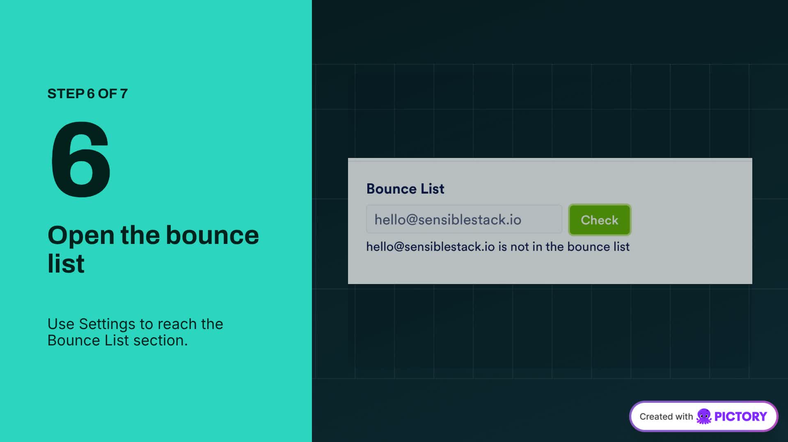
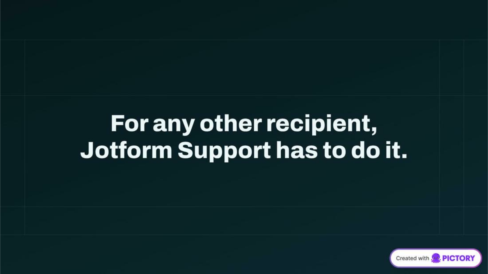

Pictory Review: A Finished Video in Minutes, If You Check Its Work
Try it: Visit Pictory (affiliate link: we may be paid if you sign up, at no extra cost to you).
6.9 Sensible Score, out of 10
Ratings by business type
Best suited to: solo operators and creators turning written content into video regularly. Weakest for businesses whose videos must show their real product screens, unless they budget the checking time this review describes.
Scored on our ten metric Sensible Score. See How We Rate for the method and what each number means.
Sensible Stack: Streamlining business, whatever your size
Review status: TRIALLED IT. We built a real video in Pictory's free trial on 19 November 2026, found two faults in it, fixed both inside Pictory's editor, and re-exported. This review rests on that build, and the video itself is linked below so you can judge the result. The trial's premium access on our account runs to 4 December 2026; a longer run of regular production would be needed before we could call this Used it.
The short answer
Pictory turns text into video faster than anything else we have tried. We gave it a finished script of about 160 words and had a narrated, captioned, watchable 63 second video roughly five generation minutes later. Then we watched it properly, and found that everything Pictory had added itself needed correcting: stock pictures where our viewers needed a real screen, and a template card that presented one of our correct instructions as a mistake. Both faults were fixable inside the editor, and fixing them is part of the real cost of the tool. Buy Pictory for the engine. Budget your own attention for the autopilot.
What it is
Pictory is a browser based video maker for people who do not edit video. The old script to video buttons have been replaced by a Video Agent: you describe the video or paste a script, pick a template and a format, and the agent builds scenes, chooses stock visuals from the Getty Images and Storyblocks libraries, adds music, and records an AI voiceover, with ElevenLabs voices among the options. A scene editor (Pictory calls it Motion Studio) lets you change any scene afterwards: swap visuals, upload your own media, restyle text, rebuild a scene entirely. Brand kits hold your colours and fonts, subtitles are generated automatically and can be exported as files, and there are avatars if you want a presenter. It is a standalone tool rather than a connected one: work goes in as text, files and uploads, and comes out as video files.
What we made, and what went wrong
Our test was a real job, not a demo. We took our own written guide, the Jotform notifications fix, condensed it into a 63 second script, and told Pictory to speak it word for word. It did, after we removed a stray "Script:" label the agent had pasted in front of the first scene. The narration is accurate throughout; we checked every line against the Jotform facts the video teaches. The problems were in the layer Pictory generated around those words.
Mistake one: the pictures are generic where it matters. Pictory matches keywords in your script to stock footage. For most scenes that is fine. For the scene that tells viewers to open Jotform's Settings and find the Bounce List section, it chose a woman holding a laptop showing an analytics dashboard. A how-to video lives or dies on the viewer seeing the real screen, and Pictory has never seen the inside of your software accounts.

Mistake two: a template card argued with the script. Our script ends with a limit: you can remove your own address from the bounce list yourself, and for any other recipient Jotform Support has to do it. Pictory's how-to template dressed that line as a "Common mistake" card and put the correct instruction inside a box labelled DON'T. Anyone skimming the video takes away the opposite of the truth.

The finished video, faults fixed, runs 63 seconds and lives with the Jotform notifications fix, the post it was made for.
How the mistakes were rectified
Both fixes were made in Pictory's own editor, without re-recording anything, and the narration was not touched.
For the Settings scene, we uploaded our real screenshot of Jotform's Bounce List section to the project's Uploads library and used Replace visual to put it in the scene, set to Fit so the whole screenshot reads clearly beside the step card. The scene now shows the actual section heading, the address field and the Check button the narration is describing.

For the card, we rebuilt that one scene in the scene editor with the template framing removed: no Common mistake heading, no DON'T and DO boxes. The line now appears as a single plain statement, which is all it ever needed to be.

The rectification has a price worth knowing before you buy. The original build cost 14.70 AI credits. The round of edits cost 39.20 credits, almost all of it the one scene rebuild, and the re-render itself added nothing. Checking and correcting is not free in Pictory's credit economy, which is the strongest argument for checking the storyboard before the first export rather than after. We wrote the checking routine up as a journal post: Your Pictory video shows the wrong screens, and one of its cards argues with your script.
Where it wins
- Speed that changes what is worth making. A written post became a finished, narrated video in minutes, a job that would take an evening in a conventional editor
- The narration honoured our script word for word, in a clear neutral voice, once we removed the agent's stray label text
- No editor lag in our build. The storyboard and scene editor responded promptly throughout, against the common complaint about Pictory; the waiting was generation time, roughly a minute for the script, two for the preview, two for the render
- Corrections are genuinely possible. Uploading our own screenshot and rebuilding a scene were both quick, and neither required touching the voiceover
- Our trial export measured 1080p, better than the 720p the plans table lists for the trial. We report what the file says, and flag the mismatch rather than smoothing it over
- Subtitles are automatic and exportable as .srt, .vtt and txt on every tier including the trial, which makes the same video usable in more places
Where it frustrates
- The autopilot cannot be trusted unreviewed. Generic stock visuals and template cards that reframe your words are not edge cases; they appeared in a 13 scene video built from a careful script
- The agent adds text you did not write. A stray "Script:" label and a closing quote reached the first scene and would have been narrated if we had not caught them
- Fixing scenes is credit hungry. One scene rebuild cost 39.20 credits, more than two and a half times the cost of building the whole video
- Trial exports carry the Pictory badge in the corner throughout, not just on a title card, so trial output is for evaluation, not publication
- One pronunciation flag we could not confirm: in the line about Jotform Support, the transcript renders the name as two words, suggesting the voice may say "Jot Form" there. Minor, but product names are exactly what a business video cannot afford to get wrong
- It replaces only the simplest editing. Faceless, narration led video is its whole range; anything performance based or precisely art directed belongs elsewhere
Pricing, and what the credits really buy
Prices checked on Pictory's plans page on 19 November 2026. Every paid card was labelled "Black Friday offer 50% off" with no end date shown, so the figures below lead with the regular prices, which are the ones to plan on. Starter is $19 per month billed annually, or $29 monthly, with 2,000 credits and up to 30 minutes of video a month. Professional is $39 billed annually, or $59 monthly, with 6,000 credits and 90 minutes. Teams is $131 billed annually, or $199 monthly, with 18,000 credits, 300 minutes and 3 team members. Enterprise is custom priced. The promotional prices shown were exactly half: $9.50, $19.50 and $65.50 per month billed annually.
The free trial carries 300 credits, up to 3 videos of at most 5 minutes, 500 MB of storage, and branding on exports. Our one video, built and then corrected, used 53.90 credits in total. On Starter's 2,000 monthly credits that arithmetic allows roughly 37 videos of this size with corrections, or well over 100 if every video came out right first time. Which of those two numbers describes your month depends entirely on how much correcting your content needs, and how-to content needs the most.
Paid plans remove the branding, raise the export ceiling to a listed 1080p, and unlock unlimited videos. Professional adds instant voice clones and custom avatars; priority support only arrives at Teams.
Who it suits, and who should skip it
Suit it if you publish written content and want it working harder as video: solo operators, creators, small businesses with a backlog of posts, guides and explainers. The workflow of script, generate, check, correct, publish is quick and repeatable. Skip it, or go in with eyes open, if your videos must show your own software, your own product or your own premises in every scene. Pictory can use your uploads, but then you are supplying the visuals anyway, and the tool's contribution narrows to voice, assembly and captions.
Try it: Visit Pictory (affiliate link: we may be paid if you sign up, at no extra cost to you).